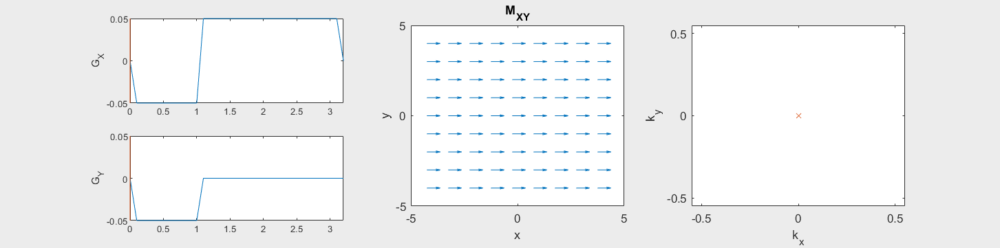
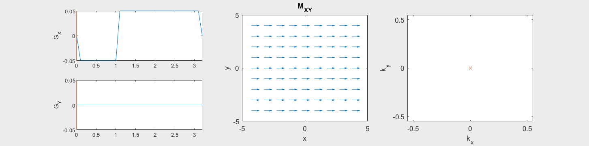
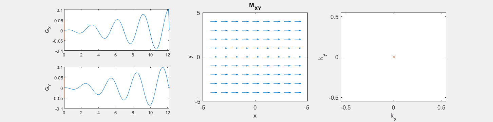

Spatial Encoding#
Gradient Encoding#
Applied magnetic field gradients change the magnetic field linearly with position:
which leads to linear variation in the resonance frequency as a function of position:
This forms the basis for spatial encoding.
Frequency Encoding#
Typically 1 dimension of the object is encoded using “frequency encoding”. This means that, after RF excitation, a magnetic field gradient is turned on and the signal is read out. The frequencies present in the signal correspond to given spatial locations. By convention, this is applied in the x-direction (but in practice can be rotated to any direction);
where \(G_{xr}\) is the readout gradient amplitude. Therefore, the position is proportional to the frequency:
% simulate frequency encoding
N = 8;
Mxy= ones(N+1,N+1);
x = [-N/2:N/2];
[x,y] = meshgrid(x,x);
Splot = 0.5;
kFE = 1/2;
dt = 0.1;
Tfe = 2;
GAMMA = 42.58;
for tfe = linspace(0,1,6)*Tfe
phase_x = 2*pi*kFE*x *tfe/Tfe;
Mxy_FE = Mxy .* exp(i*phase_x);
figure
subplot(121), plot([0:dt:Tfe+dt], [0, ones(1,Tfe/dt)*kFE/(Tfe/dt), 0], tfe*ones(1,2), [-0.05 0.05]), ylabel('G_X')
title('Frequency Encoding')
subplot(122)
quiver(x-real(Mxy_FE)*Splot/2,y-imag(Mxy_FE)*Splot/2,real(Mxy_FE), imag(Mxy_FE), Splot)
xlabel('x'), ylabel('y')
xlim([-N/2-1, N/2+1])
ylim([-N/2-1, N/2+1])
title('M_{XY}')
drawnow
end
warning: using the gnuplot graphics toolkit is discouraged
The gnuplot graphics toolkit is not actively maintained and has a number
of limitations that are ulikely to be fixed. Communication with gnuplot
uses a one-directional pipe and limited information is passed back to the
Octave interpreter so most changes made interactively in the plot window
will not be reflected in the graphics properties managed by Octave. For
example, if the plot window is closed with a mouse click, Octave will not
be notified and will not update it's internal list of open figure windows.
We recommend using the qt toolkit instead.


Phase Encoding#
Typically the 2nd (and optionally 3rd) dimensions of the object are encoded using “phase encoding”. This means that, after RF excitation but before the frequency encoding gradient, a pulsed gradient is applied such that the location is encoded in the phase of the next magnetization:
These additional dimensions are fully encoded by repeating this pulsed gradient with different amplitudes.
% 2D object
% simulate frequencies + phase encoding
N = 8;
Mxy= ones(N+1,N+1);
x = [-N/2:N/2];
[x,y] = meshgrid(x,x);
Splot = 0.5;
kPE = [-N/2:N/2]/N; %
dt = 0.1;
Tpe = 1;
GAMMA = 42.58;
for Ipe = 1:length(kPE)
for tpe = Tpe %[0:dt:Tpe]
phase_y = 2*pi*kPE(Ipe)*y *tpe/Tpe;
Mxy_PE = Mxy .* exp(i*phase_y);
figure(Ipe)
subplot(121)
plot([0:dt:Tpe+dt], [0, ones(1,Tpe/dt)*kPE(Ipe)/(Tpe/dt), 0]), ylim([-0.05 0.05]), ylabel('G_Y')
title(['Phase encoding, Step ' int2str(Ipe)])
subplot(122)
quiver(x-real(Mxy_PE)*Splot/2,y-imag(Mxy_PE)*Splot/2,real(Mxy_PE), imag(Mxy_PE), Splot)
xlabel('x'), ylabel('y')
xlim([-N/2-1, N/2+1])
ylim([-N/2-1, N/2+1])
title('M_{XY}')
drawnow
end
end


Frequency and Phase Encoding#
The following simulation of the net magnetizations shows how first the phase encoding gradient (\(G_Y\)) creates some phase variation in \(y\), and then during the frequency encoding gradient (\(G_X\)) the net magnetizations rotate at varying frequencies depending on their \(x\) position:

Instead of viewing the net magnetizations, we can also visualize this encoding as a map of the phase of the transverse magnetization:

(See spatial_encoding_Mxy_illustration.m for code generating this movie)
K-space#
A general method for capturing the effect of spatial encoding gradients is the concept of “k-space”:
K-space captures the accumulative effect (integration) of gradients on the net magnetization. Note that you always start at the center of k-space, \(\vec{k}(0) = 0\).
The following simulation of the net magnetizations shows how rotations and k-space trajectory during a typical Cartesian (or 2D FT) gradient pulse sequence, which is differs from the simulation above in that an initial dephasing gradient in the frequency encoding direction is applied to sample both positive and negative spatial frequencies in k-space:


(See spatial_encoding_Mxy_illustration.m for code generating this movie)
MR Signal and k-space#
The power of k-space is that it describe how MRI is sampling data in the Fourier Transform domain, or the spatial frequency domain, of the object net magnetization. In other words, MRI signals are a measure of the spatial frequencies of our object. This means that, to reconstruct an image we need to put our MRI signals into their k-space location, and then use an inverse Fourier Transform.
To show this, first we can describe the transverse magnetization in terms of k-space
Then we assume that \(T_2\) decay is slow relative to the readout time, so the transverse magnetization becomes
Our MR signal is the sum of all the transverse magnetizations over space
Where this now the form of a Fourier Transform, and our signal is the Fourier Transform of the initial transverse magnetization, evaluated at a spatial frequnecy, \(\vec{k}\), that is determined by the k-space trajectory, \(\vec{k}(t)\):
(The Notebook ‘MRI Signal Equation’ shows how to incorporate other effects such as T2, off-resonance, and RF coil profilesnon-idealities
MR acquisition to image#
First we use the following notation for simplification
The flow of the experiment and data is as follows:
RF excitation to create \(M_{XY}(\vec{r},0)\)
Gradients applied \(\vec{G}(t)\)
k-space location, \(\vec{k}(t)\) is determined by the gradients
MR signal acquired represents the Fourier Transform of the transverse magnetization at the k-space location: $\( s(t) = M(\vec{k}(t))\)$
MR signal over time is stored in a data matrix with known k-space locations to create \(M(\vec{k})\)
Inverse Fourier Transform is applied to reconstruct an image of the transverse magnetization $\(\mathcal{F}^{-1}\{ M(\vec{k} )\} = m(\vec{r})\)$
Hurray, we have now used magnetic field gradients, the k-space framework, and appropriate acquisition and ordering of the MR signal to create an IMAGE!!
K-space trajectories#
The k-space pattern during a MRI experiment is referred to as the k-space “trajectory”. The most common are Cartesian trajectories, in which parallel lines of k-space are covered to sample a 2D (or 3D) grid. K-space trajectories with other patterns, such as radial lines, spirals, rastered lines (echo-planar trajectories), or blades can also be used.
% plot k-space trajectories
% Cartesian
N = 8;
k = [-N/2:N/2]/N;
[ky,kx] = meshgrid(k,k);
figure
plot(kx, ky, 'LineWidth',10), xlim([-.6 .6]), ylim([-.6 .6])
xlabel('k_x'),ylabel('k_y')
title('Cartesian trajectory')
% echo-planar
kx_ep = kx; kx_ep(:,2:2:end) = kx_ep(end:-1:1,2:2:end);
kx_ep = kx_ep(:);
ky_ep = ky(:);
figure
plot(kx_ep, ky_ep, 'LineWidth',10), xlim([-.6 .6]), ylim([-.6 .6])
xlabel('k_x'),ylabel('k_y')
title('Echo-Planar trajectory')
% radial
k_theta = exp(i*2*pi*[1:N]/(2*N));
k_radial = k.' * k_theta;
figure
plot(real(k_radial), imag(k_radial), 'LineWidth',10), xlim([-.6 .6]), ylim([-.6 .6])
xlabel('k_x'),ylabel('k_y')
title('Radial trajectory')
% spiral
n = linspace(0,1,201);
Nturns = N/2;
k_spiral = 1/2*n.*exp(i*2*pi*Nturns*n);
figure
plot(real(k_spiral), imag(k_spiral), 'LineWidth',10), xlim([-.6 .6]), ylim([-.6 .6])
xlabel('k_x'),ylabel('k_y')
title('Spiral trajectory')


These movies illustrate the phase accumulation during non-Cartesian trajectories


(See spatial_encoding_Mxy_illustration.m for code generating this movie)